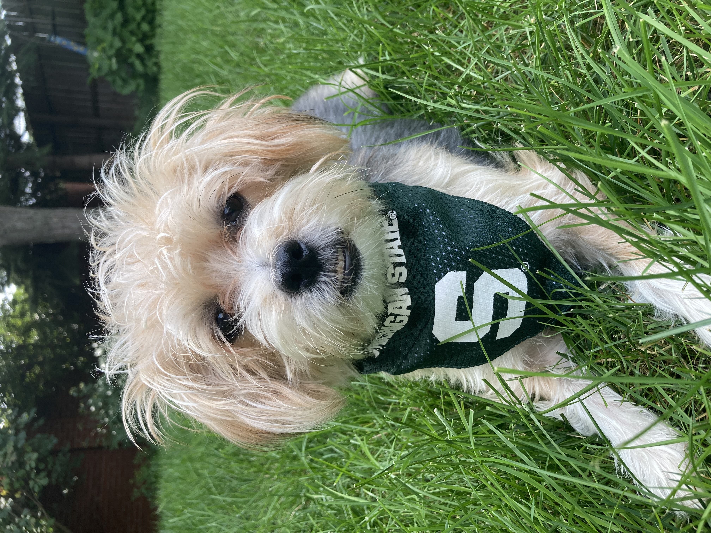
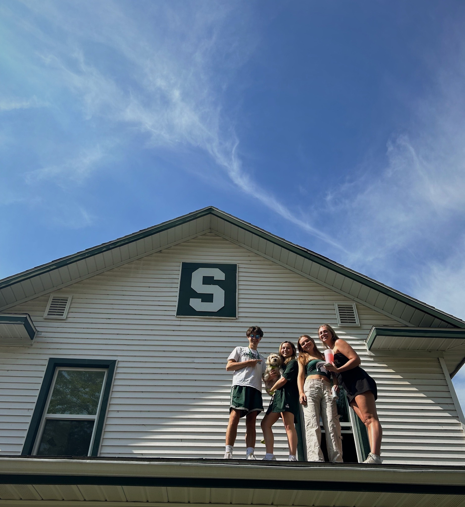

About the Author

Mia Bodenhorn is a dog enthusiast and is new to the blogging scene. With a love for storytelling and an even deeper affection for her furry companion, Bailey, Mia combines two passions in her blog. When she’s not blogging you can find Mia hanging with friends, traveling, taking photos, and going on long walks with Bailey. Her blog, "Tails of Bailey," offers a delightful blend of heartwarming tales, dog care tips, and insights into the joys and challenges of life with a beloved pet. Follow Mia and Bailey on their adventures as they navigate the world one paw at a time.
